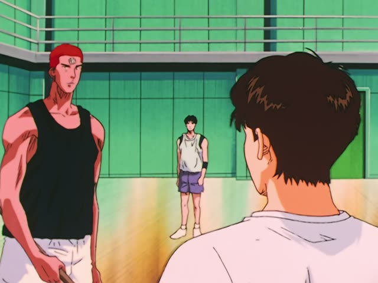

かもしれない
| Polite | ～かもしれません |
|---|---|
| Casual | ～かもしれない ～かも short, very common in speech |
Same meaning: "maybe, might". Only the politeness changes.
Nothing to add, not even after a noun: no だ before かもしれない.
| Word | Add | Ending | ||
|---|---|---|---|---|
| Noun | 学生 | – | かもしれない | He might be a student |
| な-adjective | 静か | – | かもしれない | It might be quiet |
| Verb | 行く | – | かもしれない | He might go |
| い-adjective | 高い | – | かもしれない | It might be expensive |
Quartet · Episode 2
それは運命かもしれませんね
"That might be fate." [a chance meeting that led to marriage]
かもしれない means "maybe, might": you think it's possible, but you're far from sure. About 50/50, or less.
It goes straight after a verb, an adjective or a noun, with nothing added: 運命かもしれない, never 運命だかもしれない. On this card, they talk about a chance meeting, and she says maybe that's fate.
Polite: かもしれません. In casual speech it's often cut to just かも.

Slam Dunk · Episode 86
試合に出られる日が 来るかもしれない
"The day might come when I get to play in a game."
On this card, a bench player dreams that one day he might play next to Sakuragi and Rukawa.
Quick Examples
Grey clouds, just before you leave.
雨が降るかもしれないから、傘を持っていこう。
"It might rain, so let's take an umbrella."
CasualTelling your boss about tomorrow.
明日はちょっと遅れるかもしれません。
"I might be a bit late tomorrow."
PoliteA friend points at a man far away.
あれ、田中さんかも。
"That might be Tanaka."
After a noun, no だ.
CasualWith and without
明日は雨だ。
It'll rain tomorrow. You're sure.
明日は雨かもしれない。
It might rain tomorrow. Maybe, maybe not.
Examples from Media
Last Samurai Standing · Episode 5
私も死ぬかもしれません
"I might die too."
After a verb: nothing added.
When Marnie Was There
考えた方がいいかもしれませんね
"It might be better to think about it."
方がいいかもしれません: soft advice, "maybe you should...".
Kekkon Dekinai Otoko · Episode 3
話せば楽になるかもしれませんよ
"You might feel better if you talk about it."
The Wind Rises
そうかもしれません
"Maybe so."
そうかもしれません: a polite half-agreement.
Shirokuma Cafe · Episode 10
かわいいかも！
"That could be cute!"
かも alone: the short casual form.
Death Note · Episode 11
殺されるかもしれない 分かってる？
"You might get killed, you know?"
Teasing Master Takagi-san · Season 2, Episode 2
あっ 分かったかも
"Oh, I think I've got it."
分かったかも: "I might have it", a careful "I think so".
Good Morning Call · Episode 6
あの頃が一番楽しかったかも…
"Those might have been the best days."
After a past い-adjective.
Further Reading
Tae Kim's Guide to Japanese Grammar
Expressing various levels of certainty · Using 「かもしれない」 to express uncertainty